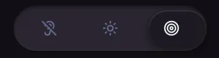
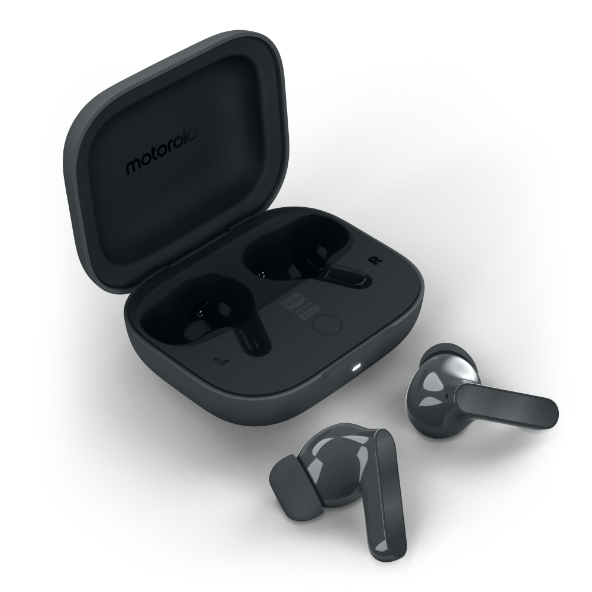
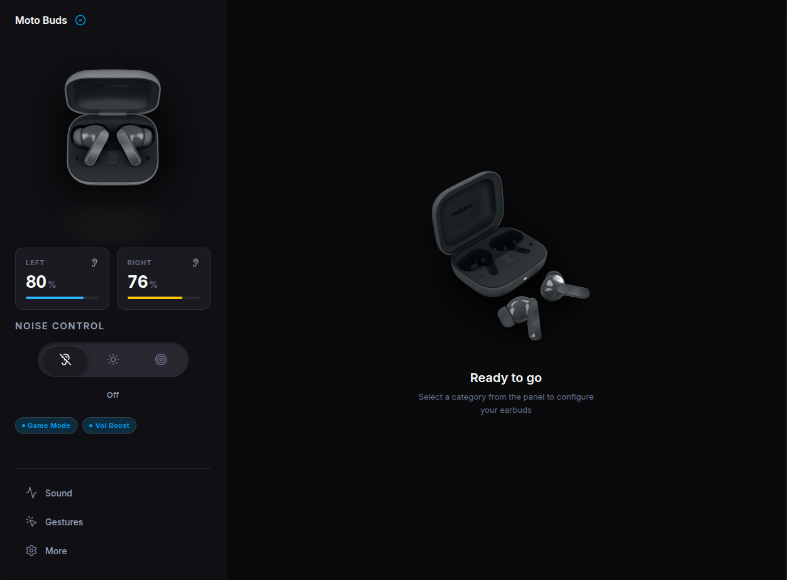
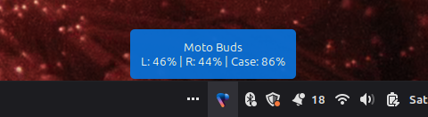
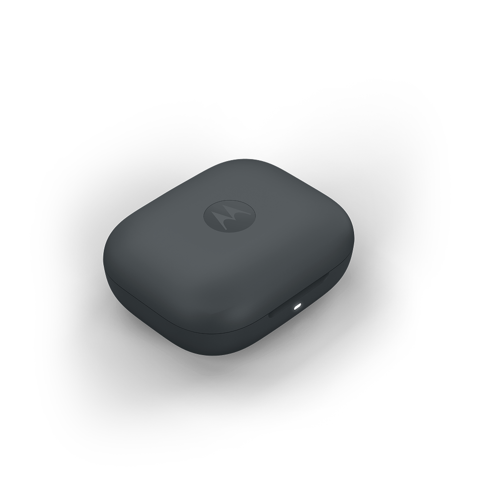
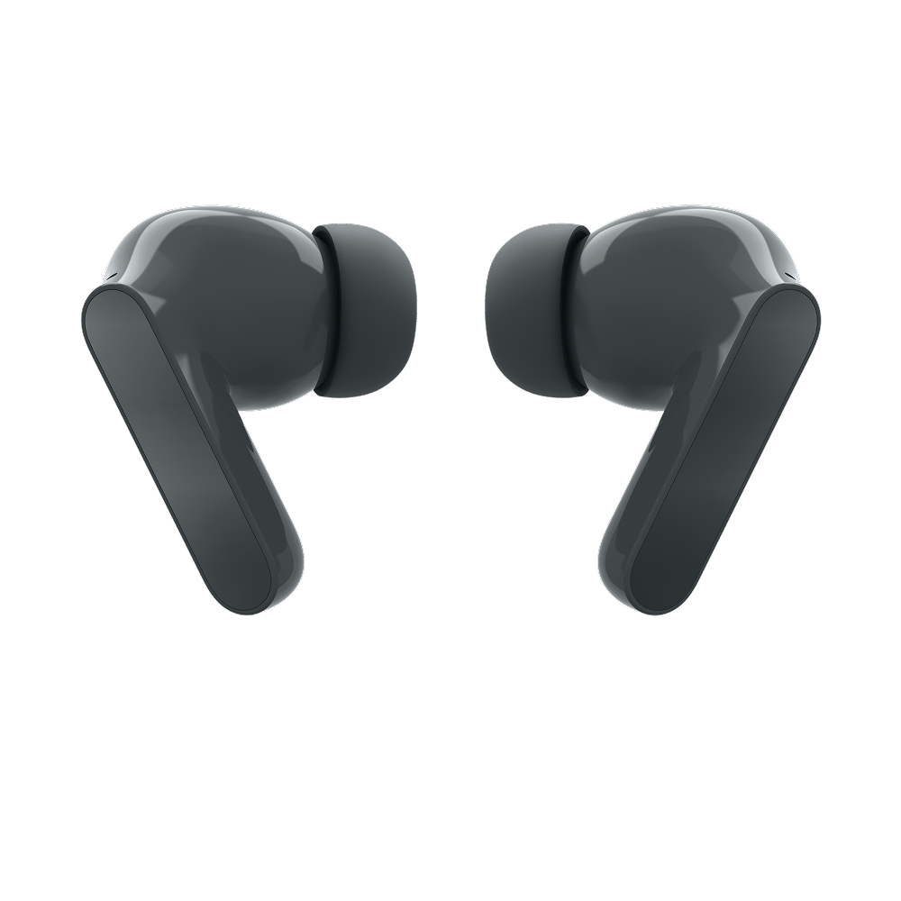

01
Active Noise Control
Select Off, Transparency, or Active Noise Cancellation. The interface waits for confirmation from the earbuds before showing the new mode.

Tune sound, switch noise control, remap gestures, and monitor every battery without reaching for your phone.

One utility. Total control.
See what each control does before you install the utility.
Select Off, Transparency, or Active Noise Cancellation. The interface waits for confirmation from the earbuds before showing the new mode.

Check the left earbud, right earbud, and charging case separately. Charging and in ear indicators update with the device.
Choose a built in sound preset or adjust ten frequency bands to create a custom profile.
Set double tap, triple tap, and press and hold actions independently for the left and right earbuds.
Enable the LDAC codec on Linux for higher resolution Bluetooth audio. The utility handles the required reconnection automatically.
Reduce Bluetooth audio latency for games and video. Game Mode and Hi Res Audio remain mutually exclusive.
Enable the earbuds built in volume boost when the normal system output level is not enough.
Ring the left or right earbud separately. A safety check prevents ringing an earbud that is detected inside your ear.
Run an acoustic seal test and receive a separate pass or fail result for each earbud.
Keep the utility running in the background. Check battery levels and change noise control from the tray.
Inside the utility
A focused interface that keeps every control easy to find.

Check each battery, current noise control mode, charging state, and enabled sound features from the main dashboard.
Quietly running. Always ready.
Keep the utility in your system tray and check batteries or change noise control without interrupting your work.


Open by design
Moto Buds Desktop Utility is a community project licensed under GPLv3. Its contributors studied the Bluetooth protocol so desktop users can access controls that were previously limited to the phone app.
The Electron interface sends a small command to the local service.
anc mode: 1
The Python service adds the protocol opcode, payload, and CRC32 check.
RFCOMM CH 16
The screen updates after the hardware response arrives, so it reflects the real device state.
ACK CONFIRMED

Ready when you are
Free, open source, and built for the hardware you already own.
Choose your download